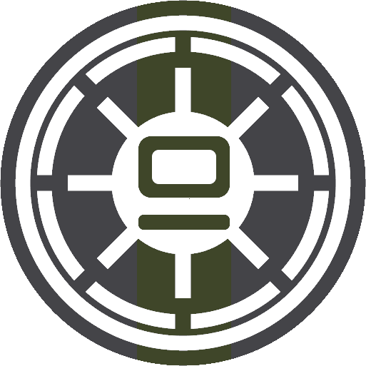

The 9th Assault Corps was a Clone Wars unit shown in several pieces of Star Wars media, most notably Star Wars: Episode III Revenge of the Sith. Our community represents the 9th Assault Corps within the Arma 3 StarSim community as Dorn Company, 9th AC. Founded in 2019 by a member named Rush, the unit has gone through different phases, leaders, and eras, but still stands today with a passionate community. Currently, Dorn Company is represented by Nexu 3 Platoon and the 4th Air Combat Wing, Aiwha.
If you are interested in joining, head to our Discord or click the "Join" button in the navigation bar at the top of the page. Recruiters are usually available throughout the EST-based day, with a few members online later as well. If you have questions, feel free to DM or ping a recruiter in chat. Once you are in the Discord, read the policies and schedule to make sure the unit fits your interests. When you are ready, go to the applications channel and type "/apply" to begin the application through D-9AC, our Discord bot.